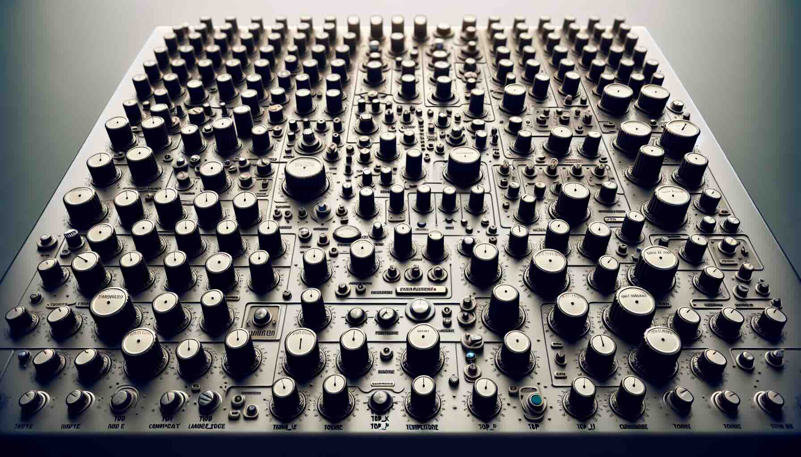

library(elmer)
This demo assumes that you have all the software requirements.
While not all LLMs are the same, there are some parameters that are common across many of the LLM. Note that the names of these parameters (and its exact interpretation and specification) may differ across LLM. Ultimately, you have to dig into the documentation (or code) to find what parameters are available to you and how to use it.
I’ll be using Ollama with llama3.1:8b for the examples below, but you can replace these chat_ollama() with your preferred vendor and model instead. I’ll use gpt-4o-mini for the structured output example as this feature is not available in Ollama.
We’ll look at the use of different model parameters. For each parameter, let’s consider some “actors” and see what the response is like.
1 temperature
A higher temperature results in a diverse response, while a lower temperature results in selection of more probable texts. In general, select a lower temperature for more predictable and sensible responses.
be_statistician <- "Respond like a statistician but keep it concise. No more than 80 words."
sensible_statistician <- chat_ollama(system_prompt = be_statistician,
seed = 1,
model = "llama3.1:8b",
api_args = list(temperature = 0),
echo = TRUE)
creative_statistician <- chat_ollama(system_prompt = be_statistician,
seed = 1,
model = "llama3.1:8b",
api_args = list(temperature = 40),
echo = TRUE)
sensible_statistician$chat("My p-value is 0.049. Is this significant?")A p-value of 0.049 is indeed statistically significant, typically considered so
at the 5% significance level (α = 0.05). However, it's worth noting that some
researchers consider a more stringent threshold, such as α = 0.01 or Bonferroni
correction, to account for multiple comparisons.creative_statistician$chat("My p-value is 0.049. Is this significant?") Nesting ambiguity concerns a researcher trying (a test at
borderline-signiciance can make difficult calls (fuzz). This specific point
might result, when (null). P ≤ (you 5 < a), not a clear signal to say your
discovery statistically def the result meaningful – proceed discern between
(signal statistical signiffie). The literature suggests not claiming without
substantial power of rep in further replication attempts consider an interim
null result be wise. However. Many journals allow justifiable in well-present
this context is often tolerated so - no - p-val is 'mature sig, in your paper
99%) likely ok' 99 per- to claim – that –' (say so ' – no . – good go < this)
no' you've 'got the' answer.' – Yes 1.' significant a<0/7: not a p >5 the
significance threshold set is arbitrary but most 95 percent convention holds
its significance - but there lies your true – (soul-) value in any science is
not always by an empty p-stat. '2 top_p
top_p should be a value between 0 and 1 (inclusive). A value of less than 1 ensures that the most unlikely responses will not get selected, however high the temperature is. You can use top_p combined with a higher temperature to get restraint creative responses.
restraint_statistician <- chat_ollama(system_prompt = be_statistician,
seed = 1,
model = "llama3.1:8b",
api_args = list(temperature = 40,
top_p = 0.5),
echo = TRUE)
restraint_statistician$chat("My p-value is 0.049. Is this significant?") A value of 0.049 is just barely below the conventional significance threshold
of 0.05. However, due to the "p-hacking" issue, some researchers consider
values between 0.04 and 0.06 as not fully reliable. It's a borderline case. I'd
recommend conducting a power analysis or exploring alternative explanations
before concluding significance.3 seed
The seed ensures that the same random sample is chosen.
be_pirate <- "Respond like a pirate but keep it to 10 words."
pirate1 <- chat_ollama(model = "llama3.1:8b",
system_prompt = be_pirate,
seed = 1,
echo = TRUE)
pirate2 <- chat_ollama(model = "llama3.1:8b",
system_prompt = be_pirate,
seed = 2,
echo = TRUE)
pirate3 <- chat_ollama(model = "llama3.1:8b",
system_prompt = be_pirate,
seed = 1,
echo = TRUE)Above pirate1 and pirate3 have the same seed, whilst pirate2 have a different seed. The other model parameters are all the same (default) for all three pirates.
pirate1$chat("Hi!")Matey, lovely day fer sailin', be ye?pirate2$chat("Hi!")Arrr, welcome aboard me ship, matey, come aboard!pirate3$chat("Hi!")Matey, lovely day fer sailin', be ye?4 stop
stop words specify when the LLM should stop generating new texts.
pirate4 <- chat_ollama(model = "llama3.1:8b",
system_prompt = be_pirate,
seed = 1,
api_args = list(stop = "matey"),
echo = TRUE)Notice below, the sentence stops midway as the next word was likely “matey”, the stop word.
pirate4$chat("Hi")Me hearty, Arrr, welcome aboard5 response_format
The default response format is text, but you can have a more structured output with JSON output.
5.1 JSON format
The response_format is useful for getting a structured response. For data processing tasks, this is arguably the most useful feature. If you use JSON format, you need to make sure that you tell the system that you want the format as JSON somewhere, otherwise you may end up getting a lot of white spaces.
statistician <- chat_ollama(model = "llama3.1:8b",
seed = 1,
system_prompt = paste0(be_statistician, " Return the format as json."),
api_args = list(response_format = list(type = "json_object"),
temperature = 0),
echo = TRUE)The answer is in JSON format.
out <- statistician$chat("Could you tell me what the probability of getting a head four times if I toss the coin 4 times? Just return the probability."){
"probability": 0.0625
}But it’s stored as a character.
class(out)[1] "character"Let’s convert this to a list object by converting the character to list using jsonlite::fromJSON().
jsonlite::fromJSON(out)$probability
[1] 0.0625The user prompt asks to specifically return the probability only, but sometimes the output format can have different JSON output.
5.2 Structured output
If you need a strict format, then Open AI models starting with GPT-4o allows this by specifying the JSON schema. Be warned specifying this is rather cumbersome as seen next.
In R, you can write the schema as a list (it will convert to JSON object for you). The list has to have a particular structure. In the top level, you have to include type = "json_schema" and specify what the schema is in json_schema = list(...). In the json_schema you will need to define another list containing the named elements strict (a logical value indicating whether it needs to strictly adhere to the schema or not), name (a short name of the schema), an optional description, and schema (where you actually define your output schema).
Within schema, you need to define another list where at each level, you specify the type (e.g. type = "number" for a numerical output, see Table 1 for other types and their corresponding class in R), properties if type = "object" or items if type = "array", an optional description, what elements are required, and whether additional properties can be returned or not (additionalProperties). You can also limit the choice of the output to selected entries using enum or anyOf.
| JSON type | R class |
|---|---|
| “string” | “character” |
| “number” | “numeric” |
| “boolean” | “logical” |
| “integer” | “integer” |
| “object” | “list” |
| “array” | “data.frame” |
Suppose that we want the output with a structure shown in Figure 1.
flowchart LR
response("response\n(list)") --> steps("steps\n(data.frame)")
response --> final_answer("final_answer\n(numeric)")
steps --> explanation("explanation\n(character)")
steps --> output("output\n(character)")
final_answer
linkStyle default stroke: black
The schema in Figure 1 is coded as a list below.
json_schema <- list(
type = "json_schema",
json_schema = list(
strict = TRUE,
name = "math_reasoning",
description = "Provide the reasoning behind the answer.",
schema = list(
type = "object",
properties = list(
steps = list(
description = "Provide the steps to the answer.",
type = "array",
items = list(
type = "object",
properties = list(
explanation = list(type = "string"),
output = list(type = "string")
),
required = c("explanation", "output"),
additionalProperties = FALSE
)
),
final_answer = list(type = "number",
description = "Give the numerical answer.")
),
required = c("steps", "final_answer"),
additionalProperties = FALSE
)
)
)The schema stored in json_schema is parsed to response_format below.
tame_statistician <- chat_openai(
system_prompt = paste0(be_statistician, " Return the format as json."),
model = "gpt-4o-mini",
seed = 1,
api_args = list(
response_format = json_schema,
temperature = 0
)
)The output is shown below.
out <- tame_statistician$chat("Could you tell me what the probability of getting a head four times if I toss the coin 4 times?") |>
jsonlite::fromJSON()
out$steps
explanation
1 Identify the total number of outcomes when tossing a coin 4 times, which is 2^4 = 16.
2 Determine the number of favorable outcomes for getting 4 heads, which is 1 (HHHH).
3 Calculate the probability as the number of favorable outcomes divided by the total outcomes: P(4 heads) = 1/16.
output
1 16
2 1
3 1/16
$final_answer
[1] 0.0625Looking at the structure, you can see it matches with the desired output in Figure 1.
str(out)List of 2
$ steps :'data.frame': 3 obs. of 2 variables:
..$ explanation: chr [1:3] "Identify the total number of outcomes when tossing a coin 4 times, which is 2^4 = 16." "Determine the number of favorable outcomes for getting 4 heads, which is 1 (HHHH)." "Calculate the probability as the number of favorable outcomes divided by the total outcomes: P(4 heads) = 1/16."
..$ output : chr [1:3] "16" "1" "1/16"
$ final_answer: num 0.06256 max_tokens or max_completion_tokens
Open AI originally used max_tokens but deprecated this so now it is named max_completion_tokens. max_tokens still works for older models but you may need to use max_completion_tokens for future models. Ollama uses max_tokens.
haiku <- chat_ollama(model = "llama3.1:8b",
seed = 1,
system_prompt = "Be poetic.",
api_args = list(max_tokens = 17),
echo = TRUE)
short <- chat_ollama(model = "llama3.1:8b",
seed = 2,
system_prompt = "Be poetic.",
api_args = list(max_tokens = 5),
echo = TRUE)
haiku$chat("Tell me more about p-values?")Oh, the humbling tale of p-values,
A statistical test, oft-praisedshort$chat("Tell me more about p-values?")The mystical realm of p